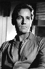

Also known as:Pánico en el Transiberiano (original title)
Country:United States, 90 minutes
Spoken languages:English
Genres:Horror
Director(s):Eugenio Martín
Writer(s):Julian Zimet, Arnaud d'Usseau
Video Codec:Unknown
Number: 77


Certification:R
Storyline:
Mysterious and unearthly deaths start to occur while Professor Saxton is transporting the frozen remains of a primitive humanoid creature he found in Manchuria back to Europe.
Cast: 


Medium: Original DVD,
Comments: Part of: 100 Greatest Horror Classics
Loaned: No
Aspect ratio: Unknown